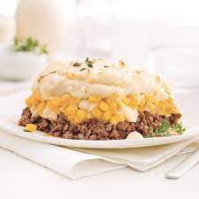

Paté Chinois

Paté chinois, quick and simple
The paté chinois is a typical meal from Québec. It is made with simple ingredients layed on top of each other.
Ingredients
- 1 Can of creamy corn
- 1 can of corn
- 500g of Ground beef
- 1 onion
- 4-5 Potatoes
- 1/2 cup of Milk
- 2 Tbsp of Butter
- Salt and pepper to taste
Steps
- Pre-heat over to 400 F
- Peel the patatoes and dice in 1 inch pieces. Bring a pot of water to a boil and cook the potatoes until soft
(10-15 minutes).
- While the potatoes are cooking, dice an onion and cook the ground beef in a pan. Add the onion before the beef is fully cook. Add salt and pepper to taste.
- Once the beef is cooked, put aside.
- When the potatoes are cooked, drain from the pot. Mash the potatoes with a potatoes masher, add the butter then the milk. Mix until the mixture is smooth and creamy. Add salt and pepper to taste.
- In a dish, add at the bottom the cooked ground beef.
- On top of the beef, add the creamy corn and the regular corn.
- Add the mashed potatoes on top.
- Cook in the oven for 15 min, or until the potatoes are brown.